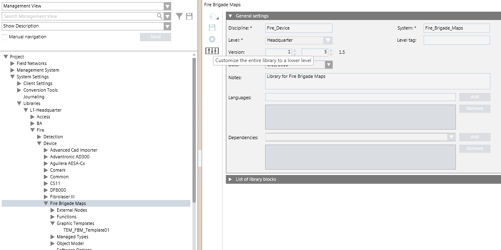
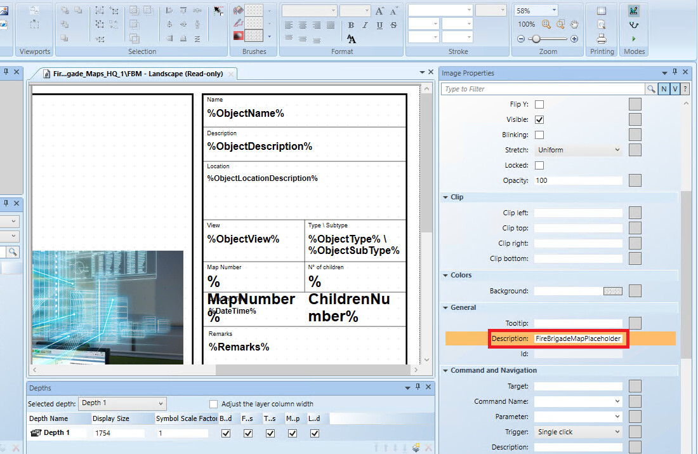
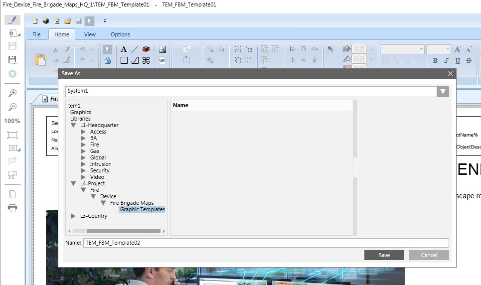

Customizing the Fire Brigade Map Template
Scenario
In the Fire Brigade Map library, you want to create a new Graphic Template with a customized layout.
For general information about graphic templates, see the Graphic Editor section.
Prerequisites
- You are authorized and trained to customize the system libraries.
- System Manager is in Engineering mode.
- System Browser is in Management View.
NOTICE

System malfunction
Incorrect modifications to system libraries will cause the product to malfunction.
Do not modify system libraries unless you have enough knowledge and experience to change them without destroying or corrupting crucial data.
1 – Create a Customized Fire Brigade Map Library
Skip this section if the customized Fire Brigade Map library already exists.
- Select Project > System Settings > Libraries > L1 Headquarters > Fire > Device > Fire Brigade Map.
- Select the Library Configurator tab.
- Click Customize the entire library to a lower level
 .
. - Click OK.
- The structure of the Fire Brigade Map library is duplicated under the allowed customization level. For example, […] > L4-Project > Fire > Device > Fire Brigade Map > Graphic Templates.

2 – Create and Save New Template
- Create a new graphic template. Do one of the following:
- In Management View, open the default template from Project > System Settings > Libraries > L1 Headquarters > Fire > Device > Fire Brigade Map.> Graphic Templates.
- In Application View, create a new graphic template from Applications > Graphics.
- Modify the graphic template as necessary and save it with a new name in the customized library L4-Project > Fire > Device > Fire Brigade Map > Graphic Templates.
NOTE: Make sure to set the Description property of one image element to FireBrigadeMapPlaceholder. That image will be replaced by the map during the Fire Brigade Map generation. - In the Fire Brigade Map step 3, indicate the new template.

